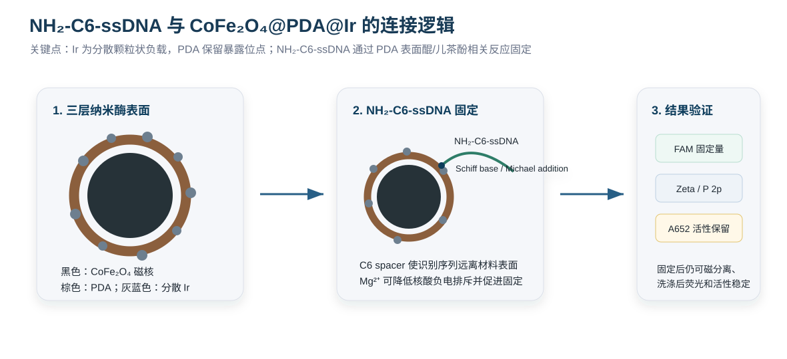

实验总逻辑与判定标准
本流程的核心是先证明三层材料成立，再证明三层材料表面可固定核酸探针，最后证明 HuNoV GII.4 基因组 RNA 靶序列能够把 HCR initiator 锚定到 CoFe₂O₄@PDA@Ir 表面并触发表面 HCR，形成可重复的 TMB/H₂O₂ 比色信号变化。每一步均保留对照材料，便于判断问题来源。
| 实验层次 | 要回答的问题 | 主要证据 | 进入下一步的条件 |
|---|---|---|---|
| 材料层 | CoFe₂O₄@PDA@Ir 是否形成 | EDS/XPS 检出 Ir，PDA 特征信号存在，磁响应保留 | 材料能磁分离，且 A652 高于 CoFe₂O₄@PDA |
| 界面层 | Ir 负载后是否还能接核酸探针 | FAM-capture DNA 固定量，Zeta 变化，洗涤后荧光保留 | FAM 固定量可测，random DNA 背景较低 |
| 活性层 | 探针固定是否破坏 Ir 活性 | 探针固定前后 A652 对比 | 固定后仍保留稳定 TMB/H₂O₂ 显色能力 |
| 识别放大层 | GII.4 RNA 靶序列是否特异触发表面 HCR | 完全互补、错配、random、无 assistant 和无 H1/H2 的 ΔA652 对比 | 完全互补靶标与对照之间可区分，HCR 泄漏低 |
靶标与探针设计
选择 HuNoV GII.4 基因组中的保守区域作为分子靶点，例如 ORF1-ORF2 junction、RdRp 或 VP1 中适合 GII.4 区分的片段。方法建立阶段优先使用 60-120 nt synthetic GII.4 RNA fragment，后续再扩展到提取病毒 RNA。
| 组分 | 推荐设计 | 功能 |
|---|---|---|
| capture DNA | 5'-NH₂-C6 或 5'-SH-C6 修饰，长度 20-30 nt，与 GII.4 RNA 靶序列一端互补 | 固定在 CoFe₂O₄@PDA@Ir 表面，用于捕获 HuNoV GII.4 基因组 RNA 靶序列 |
| assistant probe | 一端与 GII.4 RNA 靶序列另一段互补，另一端为 HCR initiator 序列 | 在靶 RNA 存在时把 HCR initiator 锚定到颗粒表面 |
| H1/H2 发夹探针 | 根据 initiator 设计两条互补发夹 DNA，茎区稳定、环区可被逐步打开 | 进行表面 HCR，形成厚核酸层 |
| synthetic GII.4 RNA fragment | 覆盖 capture 和 assistant 两段互补区域，可选择 80-150 nt 片段 | 建立方法、优化 HCR 条件和绘制标准曲线 |
| 错配 RNA | 单碱基错配、多碱基错配和 random RNA | 验证序列特异性 |
| 泄漏对照 | 无 GII.4 RNA、无 assistant、无 H1/H2、random assistant | 评价 HCR 自发打开和非特异吸附背景 |
探针序列需进行 BLAST 或等效比对，避免与其他常见病毒、细菌或食品基质核酸序列产生高同源性。探针 Tm 建议接近，避免强发夹结构和二聚体。
商品化 CoFe₂O₄ 预处理
- 称取商品化 CoFe₂O₄ 纳米颗粒 10 mg，加入 RNase-free 水或超纯水 10 mL，得到 1 mg/mL 分散液。
- 超声 10 min，使材料充分分散。
- 磁分离 1-3 min，弃上清，用超纯水洗 3 次，再用 10 mM Tris buffer 洗 1 次。
- 重悬为 1 mg/mL CoFe₂O₄ 分散液。
放行标准：材料在水相中可重悬，磁铁可在短时间内富集颗粒，DLS/TEM 可用于确认粒径与分散情况。
注意点
- 商品化粉末初次分散时容易团聚，超声后应立即进行磁分离洗涤，去除可溶杂质和过细悬浮杂质。
- 后续所有质量对比建议以干粉投料量和最终分散体积记录，保证不同批次材料浓度可追溯。
- 若同一批材料沉降过快，应在每次取样前充分混匀，避免不同孔之间材料量不一致。
CoFe₂O₄@PDA 制备
- 取 CoFe₂O₄ 分散液 10 mL，1 mg/mL。
- 加入 Tris buffer，使体系为 10 mM、pH 8.5。
- 加入多巴胺盐酸盐至 1 mg/mL，室温避光振荡 2-4 h。
- 磁分离，用 RNase-free 水或超纯水洗 3 次，PBS 洗 1 次。
- 重悬为 1 mg/mL CoFe₂O₄@PDA，4 °C 保存。
放行标准：DLS 粒径增大，Zeta 电位改变，XPS 出现 N 1s，TEM/SEM 显示包覆趋势，磁响应保留。
参考依据
PDA 通用包覆：10.1126/science.1147241PDF摘
PDA-coated CoFe₂O₄ 负载贵金属类比：10.1016/j.apcatb.2017.02.037PDF摘
CoFe₂O₄@PDA@Ir 三层纳米酶制备
- 取 CoFe₂O₄@PDA 分散液 10 mL，0.5-1 mg/mL。
- 加入 IrCl₃ 或 H₂IrCl₆ 前驱体，设置低、中、高三个负载梯度。初始可从 0.05、0.10、0.20 mM 范围摸索。
- 室温搅拌或振荡 30-60 min，使 Ir 前驱体在 PDA 表面吸附和配位。
- 冰浴或室温下缓慢加入新配 NaBH₄，使终浓度处于温和还原范围；加入过程保持搅拌，避免局部还原过快导致 Ir 团聚。
- 继续反应 30-120 min，磁分离，使用超纯水或 PBS 洗涤 3-5 次。
- 重悬为 0.5-1 mg/mL CoFe₂O₄@PDA@Ir，4 °C 保存。
放行标准：TEM/SEM-EDS 可见 Ir 分散负载，XPS 可见 Ir 信号，磁响应保留；TMB/H₂O₂ 体系中 CoFe₂O₄@PDA@Ir 的 A652 高于 CoFe₂O₄@PDA。优先选择 Ir 分散、A652 活性较高且仍保留探针固定能力的负载条件。
NH₂-C6-ssDNA 与三层纳米酶的连接机制
CoFe₂O₄@PDA@Ir 完成后，ssDNA 的固定重点不是依赖 CoFe₂O₄ 本身，而是依赖 PDA 中间层。PDA 表面含有醌、儿茶酚、胺/亚胺等活性结构，5'-NH₂-C6 修饰的 capture DNA 末端氨基可与 PDA 表面的醌结构发生 Schiff base 反应和 Michael 加成。C6 spacer 把 DNA 识别序列从材料表面支撑出来，减少表面空间位阻，有利于后续 GII.4 RNA 靶序列杂交。

| 问题 | 解释 | 实验验证 |
|---|---|---|
| ssDNA 接在哪里 | 主要接在 CoFe₂O₄@PDA@Ir 表面仍暴露的 PDA 位点上，也可能存在少量非共价吸附或金属界面辅助吸附 | 比较 CoFe₂O₄、CoFe₂O₄@PDA、CoFe₂O₄@PDA@Ir 的 FAM-ssDNA 固定量 |
| Ir 会不会挡住 PDA | 如果 Ir 为分散颗粒状负载，PDA 仍有暴露区域；如果 Ir 形成致密连续层，则 ssDNA 固定会明显下降 | 低/中/高 Ir 负载梯度 + FAM-ssDNA 固定量 + A652 活性保留 |
| Mg²⁺ 为什么有用 | DNA 磷酸骨架带负电，Mg²⁺可屏蔽电荷排斥并促进 DNA 靠近 PDA 表面 | 设置有 Mg²⁺和无 Mg²⁺固定对照 |
| 固定后是否还能检测 | 探针层不能把 Ir 活性位点完全遮挡，否则 TMB/H₂O₂ 显色会变弱或不稳定 | 比较固定前后 A652 和重复性 |
| 文献支撑点 | 参考文献 | 用于本步骤的依据 |
|---|---|---|
| Fe₃O₄@PDA 可装载 hairpin ssDNA 并用于 mRNA 检测 | 10.1021/nn500722yPDF摘 | 这是“磁性氧化物@PDA + ssDNA 探针 + RNA 识别”的强相邻证据，可支撑本方案中 CoFe₂O₄@PDA@Ir 表面固定 capture ssDNA 后识别 GII.4 RNA 的设计。 |
| Fe₃O₄@PDA@DNA 可形成 DNA 功能层 | 10.1021/acs.analchem.9b01591PDF摘 | 直接体现 Fe₃O₄@PDA@DNA 纳米探针构建，支撑 PDA 磁性材料表面进一步构建 DNA 分子识别/放大层。 |
| PDA 涂层可作为通用表面改性平台 | 10.1126/science.1147241PDF摘 | 支撑 CoFe₂O₄ 表面 PDA 包覆和后续功能化。 |
| PDA 适用于生物传感界面和生物分子固定 | 10.1016/j.ccr.2023.215564PDF摘 | 支撑 PDA 在传感界面、金属锚定和生物分子连接中的通用作用。 |
| PDA 表面可连接氨基/巯基 DNA | 10.1016/j.aca.2024.342382PDF摘 | 直接支持 NH₂-C6-ssDNA 在 PDA 暴露位点固定，并支持 Mg²⁺辅助策略。 |
| CoFe₂O₄@PDA 可负载贵金属纳米颗粒 | 10.1016/j.apcatb.2017.02.037PDF摘 | 支撑磁性 CoFe₂O₄@PDA@贵金属三层材料构建；本实验将金属组分替换为 Ir 后需实验证明。 |
推荐验证流程
- 分别准备 CoFe₂O₄、CoFe₂O₄@PDA、低 Ir-CoFe₂O₄@PDA@Ir、中 Ir-CoFe₂O₄@PDA@Ir 和高 Ir-CoFe₂O₄@PDA@Ir。
- 加入 FAM-NH₂-C6-ssDNA，设置 50、100、200 nM 梯度；加入 MgCl₂ 至 5-20 mM。
- 室温避光振荡 1-4 h 后磁分离，测定上清荧光下降量和洗涤液荧光。
- 固定后重新测试 TMB/H₂O₂ A652，筛选“固定量足够、洗脱少、A652 仍稳定”的 Ir 负载条件。
- 用 random DNA、无 Mg²⁺、无 PDA 材料作为对照，排除单纯非特异吸附。
capture DNA probe 固定到 CoFe₂O₄@PDA@Ir
Ir 负载层应控制为分散颗粒状，使 PDA 仍有暴露区域。主路线优先采用 NH₂-C6-capture DNA，通过 PDA 表面醌结构相关的 Schiff base/Michael 加成完成固定；SH-C6-capture DNA 可作为备选连接方式。固定量必须用 FAM 标记探针定量验证。
- 取 CoFe₂O₄@PDA@Ir 1 mL，0.2-0.5 mg/mL。
- 加入 FAM-NH₂-C6-capture DNA probe 或 FAM-SH-C6-capture DNA probe，使终浓度为 50、100、200 nM 梯度。
- NH₂ 探针路线：加入 MgCl₂ 至 5-20 mM，室温振荡 1-4 h，促进 DNA 在 PDA 暴露位点固定。
- SH 探针路线：按供应商说明还原巯基探针后，与 CoFe₂O₄@PDA@Ir 室温孵育 2-6 h，比较其在 Ir/PDA 界面上的固定效率。
- 磁分离，收集上清，测定 FAM 荧光下降量计算固定效率。
- 用 PBS 或 PBST 轻洗 2-3 次，加入 1% BSA 或 0.1 mg/mL ssDNA 封闭 30 min。
- 固定后再次检测 TMB/H₂O₂ 活性，比较 A652 保留率。
放行标准：CoFe₂O₄@PDA@Ir 上的探针固定量达到可测水平，且固定后纳米酶活性仍保留。若固定量明显低于 CoFe₂O₄@PDA，需降低 Ir 负载或改用 SH-C6 探针。
参考依据
PDA 表面 DNA 固定：10.1016/j.aca.2024.342382PDF摘
HuNoV GII.4 RNA 靶序列触发表面 HCR 检测流程
- 取 CoFe₂O₄@PDA@Ir-capture probe 100 μL，材料浓度 0.1-0.2 mg/mL。
- 加入 synthetic GII.4 RNA fragment 100 μL，设置浓度梯度。初始梯度可覆盖高、中、低三个数量级，具体范围根据供应商浓度和预实验调整。
- 加入 assistant probe 50-100 μL，初始终浓度可从 50-200 nM 梯度优化。
- 使用 2× SSC、PBS-Mg²⁺或等效核酸杂交缓冲液，37-45 °C 孵育 30-60 min，使 GII.4 RNA 靶序列同时连接表面 capture DNA 和 assistant probe。
- 磁分离 1-3 min，用杂交缓冲液或 PBST 轻洗 2-3 次。
- 加入 H1/H2 发夹探针，初始终浓度可设置为 100、200、500 nM 梯度，在 25-37 °C 反应 30-90 min。
- 再次磁分离 1-3 min，用杂交缓冲液或 PBST 洗涤 2-3 次，去除游离 H1/H2。
- 加入 TMB/H₂O₂ 显色液，反应 5-15 min，读取 A652。
预期趋势：完全互补 GII.4 RNA 靶序列可将 assistant probe 和 HCR initiator 锚定到 CoFe₂O₄@PDA@Ir 表面，随后触发 H1/H2 聚合形成厚核酸层。该核酸层会增加空间位阻和扩散限制，使 TMB/H₂O₂ 与 Ir 活性位点接触受限，A652 预期随靶 RNA 浓度升高而降低。错配 RNA、random RNA、无 assistant 和无 H1/H2 对照应显示较小 ΔA652。
机制依据
核酸层调控纳米酶活性属于可行的相邻机制。已有研究利用 DNA 对金属纳米颗粒类过氧化物酶活性的抑制或调控实现核酸比色检测；Norovirus RNA 的核酸放大和磁分离检测也已有文献基础。本实验将该逻辑转移到 CoFe₂O₄@PDA@Ir 三层材料表面，并以 HCR 层增强 ΔA652。
DNA 调控纳米酶活性：10.1016/j.bios.2017.02.025摘
Norovirus RNA 核酸放大检测：10.1016/j.molliq.2021.117870摘
TMB/H₂O₂ 显色读出
- 配制乙酸-乙酸钠缓冲液，pH 3.5-5.5 梯度优化。
- TMB 终浓度初始设置 0.4-1.0 mM。
- H₂O₂ 终浓度初始设置 10-100 mM。
- 反应温度设为室温或 37 °C，显色 5-15 min。
- 读取 A652，并进行空白校正。
磁性纳米酶/TMB 体系基础：10.1038/nnano.2007.260PDF摘
必须设置的对照
| 对照 | 组成 | 用途 |
|---|---|---|
| 空白 | CoFe₂O₄@PDA@Ir-capture probe + assistant + H1/H2，无 GII.4 RNA | 评价 HCR 泄漏和材料本底 A652 |
| 无 probe | CoFe₂O₄@PDA@Ir + GII.4 RNA + assistant + H1/H2 | 证明信号变化依赖表面 capture DNA |
| 无 assistant | CoFe₂O₄@PDA@Ir-capture probe + GII.4 RNA + H1/H2 | 证明 HCR initiator 锚定依赖 assistant probe |
| 无 H1/H2 | CoFe₂O₄@PDA@Ir-capture probe + GII.4 RNA + assistant | 证明 A652 变化主要来自 HCR 放大层 |
| 无 Ir | CoFe₂O₄@PDA-capture probe + GII.4 RNA + assistant + H1/H2 | 证明主要 A652 信号来自 Ir 外层纳米酶 |
| 错配 RNA | single-base mismatch、多碱基 mismatch | 评价序列识别特异性 |
| random RNA | 无关 RNA 序列 | 评价非特异核酸吸附 |
| RNase 处理 | GII.4 RNA 靶序列经 RNase 处理后检测 | 确认信号依赖 RNA 靶标 |
RNA 操作要求
- 所有 RNA 溶液、离心管和枪头采用 RNase-free 条件。
- RNA 分装保存，避免反复冻融。
- synthetic GII.4 RNA fragment 使用前可 65 °C 加热 5 min，冰浴 2 min，再置于杂交缓冲液中平衡。
- 提取病毒 RNA 时，应增加提取空白、阴性样品和加标样品。
- 食品样品提取液可能含核酸酶或抑制物，需通过稀释、磁分离洗涤或前处理降低干扰。
数据处理
- 主方案预期 HCR 层导致 A652 降低，使用 ΔA652 = A652,blank - A652,sample；若预实验显示 A652 升高，则改用 ΔA652 = A652,sample - A652,blank。
- 以 synthetic GII.4 RNA fragment 浓度为横坐标，ΔA652 为纵坐标建立标准曲线。
- LOD 在获得真实数据后按 3σ/slope 计算。
- 重复性用 RSD 表示，至少 3 次独立重复。
- 食品基质中采用基质标准曲线或标准加入法计算回收率。
方法拓展路线
HCR 作为主检测放大策略。后续可在不改变 CoFe₂O₄@PDA@Ir 三层材料主线的前提下，进一步比较 CHA、HCR-CHA 联用，或在前端加入 RT-RPA/RT-LAMP 扩增，以适配更低拷贝数或复杂样品检测需求。
| 增强方式 | 操作思路 | 适用情况 | 注意事项 |
|---|---|---|---|
| CHA | GII.4 RNA 靶序列催化两条发夹探针反应，在表面形成可累积的核酸结构 | HCR 泄漏较高或需要更强循环放大 | 需设置无靶标和错配 RNA 泄漏对照 |
| HCR-CHA 联用 | CHA 先放大 initiator，再触发表面 HCR 层形成 | 靶 RNA 浓度较低且单独 HCR 灵敏度不足 | 体系更复杂，需严格优化背景 |
| RT-RPA/RT-LAMP 后检测 | 先将病毒 RNA 等温扩增，再用三层纳米酶探针检测扩增产物 | 目标拷贝数低或真实样品 RNA 含量低 | 扩增产物污染风险较高，需分区操作 |
Norovirus RNA 的 CHA + 磁分离检测已有文献基础：10.1016/j.molliq.2021.117870摘
安全与废液处理注意事项
| 材料/过程 | 主要风险 | 操作要求 |
|---|---|---|
| CoFe₂O₄ 纳米粉末 | 粉尘吸入和纳米颗粒暴露 | 称量时佩戴口罩、手套和护目镜，避免扬尘，湿润后再转移 |
| 多巴胺盐酸盐/PDA 反应 | 弱碱条件下自聚合，污染器皿表面 | 现配现用，避光反应，反应后及时清洗容器 |
| IrCl₃ 或 H₂IrCl₆ | 贵金属盐刺激性和重金属废液风险 | 戴手套操作，含 Ir 废液单独收集，不直接排入下水道 |
| NaBH₄ | 强还原剂，遇水/酸可放出氢气，加入过快会剧烈起泡 | 新鲜低温配制，小量缓慢加入，远离火源，保持通风 |
| TMB | 潜在有害显色底物 | 避免皮肤接触，显色废液集中收集 |
| H₂O₂ | 氧化性和刺激性 | 使用低浓度工作液，避免与还原剂直接混合储存 |
| RNA 操作 | RNase 污染影响 RNA 稳定性 | 使用 RNase-free 耗材，RNA 分区操作，避免反复冻融 |